پنل مدیریت، بخش پشتصحنهی سایت است که فقط مدیران به آن دسترسی دارند. از اینجا میتوانید هر متن و تصویر سایت را عوض کنید، محصول اضافه کنید، قیمتها را تغییر دهید و پیامهای مشتریان را ببینید.
نشانی سایت را در مرورگر باز کنید و در انتهای آن /admin را اضافه کنید؛ مثلاً: https://نشانی-سایت/admin. بهتر است همین نشانی را در بخش علاقهمندیها (Bookmark) مرورگر ذخیره کنید.
admin) و رمز عبور را وارد کنید. رمز اولیه را مدیر فنی سایت هنگام تحویل به شما میدهد.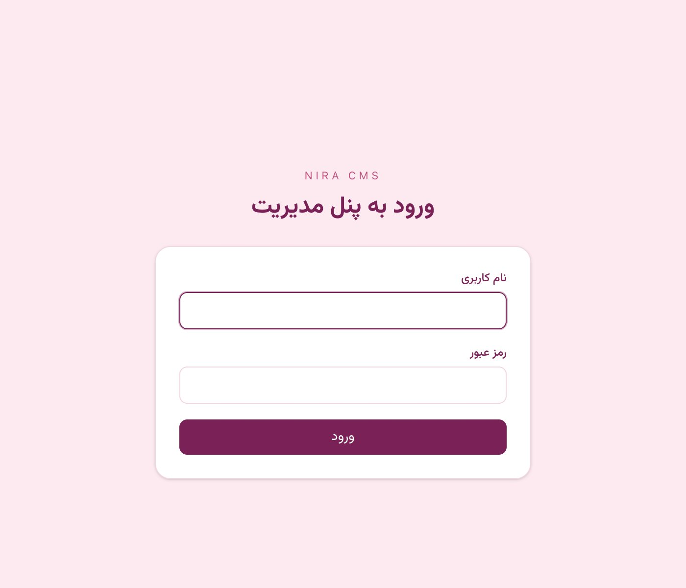
در پایین منوی کناری دکمهی «خروج» هست. وقتی کارتان تمام شد، بهخصوص روی رایانهی مشترک، حتماً از پنل خارج شوید.
پس از ورود، صفحهی «داشبورد» را میبینید. در بالای آن چهار کارت، تعداد محصولات، رویدادهای گالری، پروژههای آرشیو و پیامهای خواندهنشده را نشان میدهد. زیر آن، آخرین پیامها و درخواستها فهرست شدهاند.
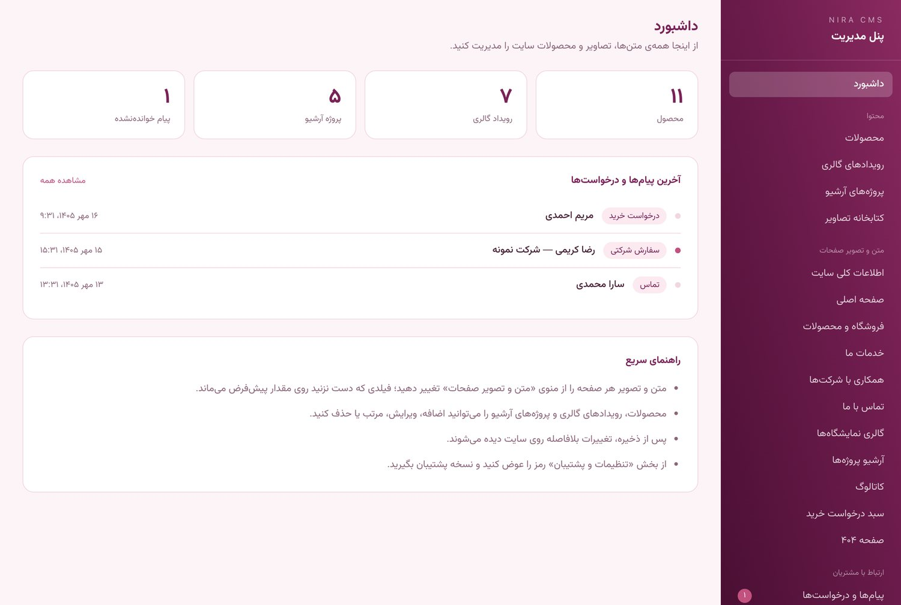
همهی کارهای پنل از منوی سمت راست انجام میشود:
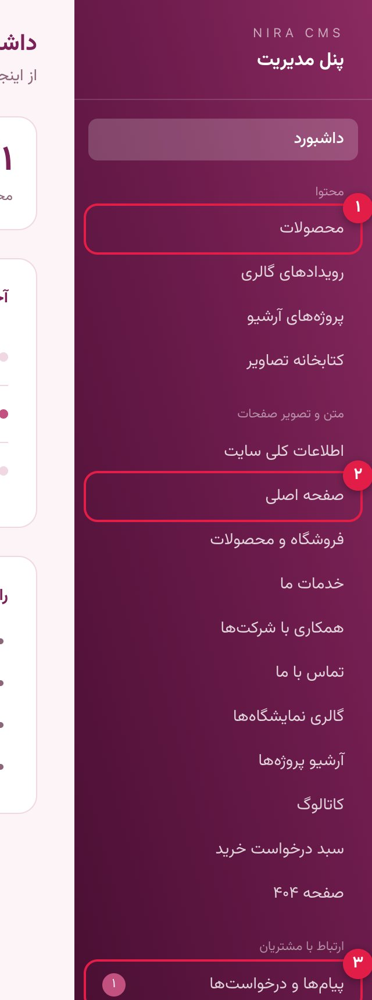
| بخش منو | برای چه کاری؟ |
|---|---|
| ۱ محصولات | افزودن، ویرایش، قیمتگذاری، مخفی کردن و حذف محصولات |
| رویدادهای گالری | نمایشگاههایی که نیرا در آنها حضور داشته (صفحهی «گالری») |
| پروژههای آرشیو | همکاریها و پروژههای شرکتی (صفحهی «آرشیو») |
| کتابخانه تصاویر | همهی تصاویری که آپلود کردهاید |
| ۲ گروه «متن و تصویر صفحات» | ویرایش متن و تصاویر هر صفحهی سایت (صفحه اصلی، فروشگاه، خدمات، تماس و…) |
| ۳ پیامها و درخواستها | فرمهای تماس، درخواستهای شرکتی و درخواستهای خرید |
| ۴ تنظیمات و پشتیبان | تغییر رمز عبور و دانلود نسخهی پشتیبان |
هر صفحهی سایت یک بخش جدا در منوی «متن و تصویر صفحات» دارد. وارد بخش دلخواه شوید (مثلاً «صفحه اصلی»)؛ فرمهایی میبینید که هر کدام به یک قسمت از صفحه مربوط است: عنوانها، توضیحات، متن دکمهها، تصاویر بنر و…
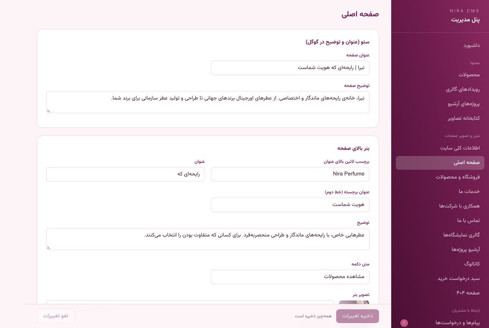
کنار هر تصویر، کادر نشانی، یک پیشنمایش کوچک و دکمهی «انتخاب / آپلود» هست. با زدن این دکمه، پنجرهی انتخاب تصویر باز میشود (توضیح کامل در بخش ۵).
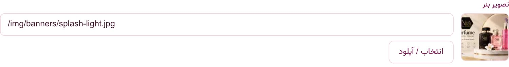
اگر متنی را عوض کنید و بعد پشیمان شوید، زیر همان کادر دکمهی «بازگشت به پیشفرض» پیدا میشود؛ با زدن آن و ذخیره، مقدار اولیهی سایت برمیگردد. دکمهی «لغو تغییرات» هم همهی تغییرات ذخیرهنشدهی همان صفحه را پس میگیرد.
از منوی «محصولات» همهی محصولات فروشگاه را میبینید. ترتیب این فهرست، همان ترتیب نمایش در سایت است.
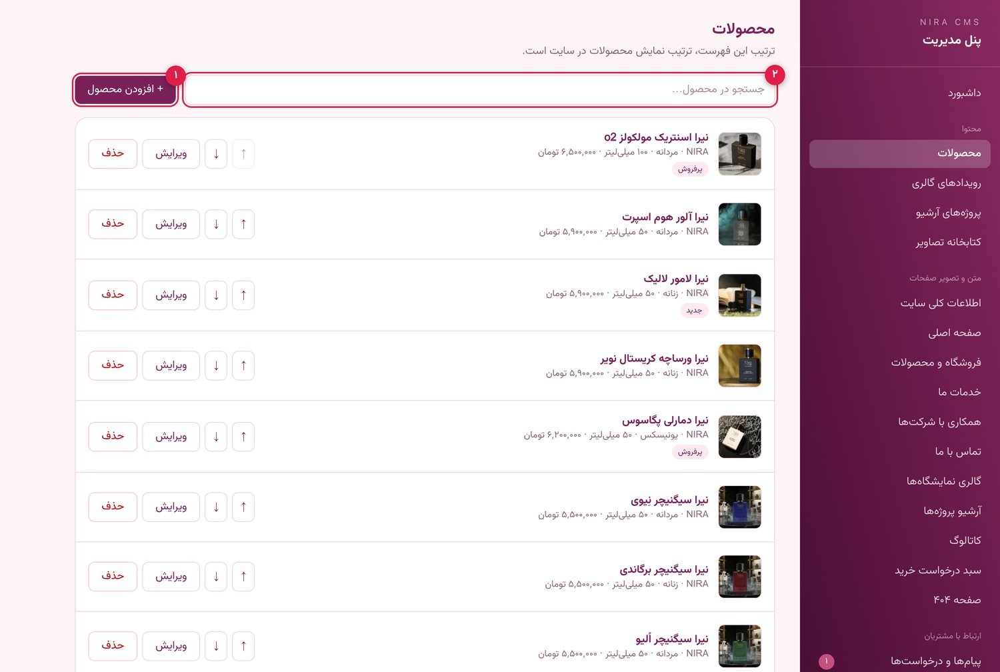
کنار هر محصول چهار دکمه هست: ویرایش، فلشهای بالا و پایین برای جابهجایی در فهرست، و حذف. برچسبهایی مثل «پیشنویس (مخفی)»، «ناموجود»، «پرفروش» و «جدید» هم زیر نام محصول نمایش داده میشوند.
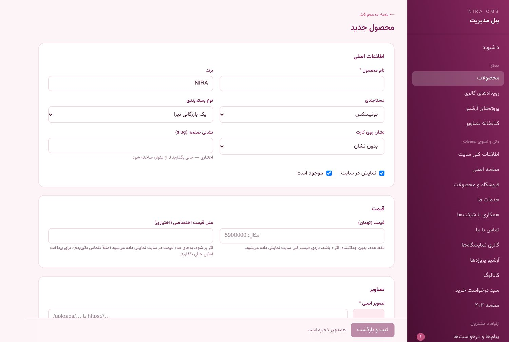
روی «ویرایش» کنار محصول بزنید و هر فیلد را تغییر دهید. بخشهای فرم:
| بخش | توضیح |
|---|---|
| اطلاعات اصلی | نام، برند، دستهبندی (زنانه/مردانه/یونیسکس)، نوع بستهبندی، نشان روی کارت («پرفروش» یا «جدید»)، و نشانی صفحه (slug). نشانی صفحه را معمولاً دست نزنید؛ تغییر آن لینک قبلی محصول را از کار میاندازد. |
| نمایش در سایت / موجود است | اگر «نمایش در سایت» را بردارید، محصول در سایت مخفی (پیشنویس) میشود ولی در پنل میماند. اگر «موجود است» را بردارید، روی کارت «ناموجود» نوشته میشود. |
| قیمت | توضیح کامل در ادامه. |
| تصاویر | تصویر اصلی و تصاویر گالری (چند عکس اضافه). |
| مشخصات | حجم، غلظت، کشور سازنده، عطرساز، ماندگاری، فصل پیشنهادی و فهرست حجمهای موجود. |
| هرم بویایی و توضیحات | نتهای ابتدایی، میانی و پایانی و متن معرفی محصول. |
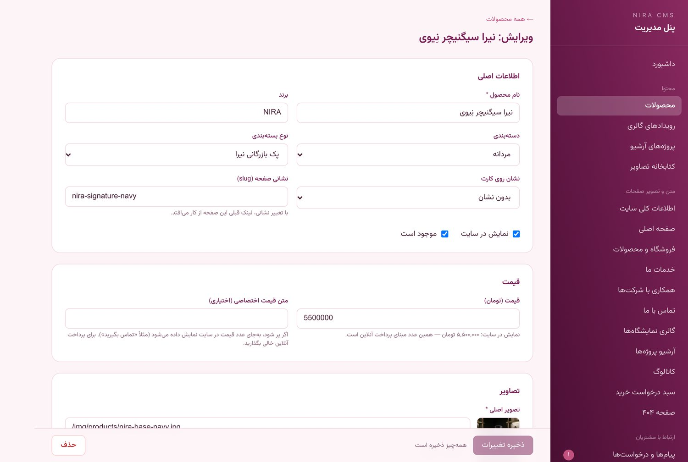
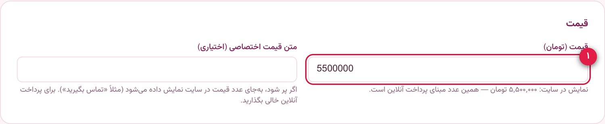
5900000 (ارقام فارسی هم پذیرفته میشود). زیر کادر، همان عدد با جداکننده نمایش داده میشود تا اشتباه تایپی نکنید. سایت این عدد را روی کارت محصول، صفحهی محصول و سبد خرید نشان میدهد و جمع کل سبد را هم از روی آن حساب میکند.۰ باشد و متن اختصاصی هم نباشد، بازهی قیمت کلی سایت نمایش داده میشود (از «فروشگاه و محصولات» قابل تغییر است).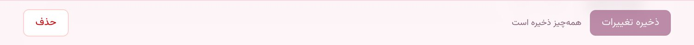
پس از ثبت، روی سایت نتیجه را ببینید:
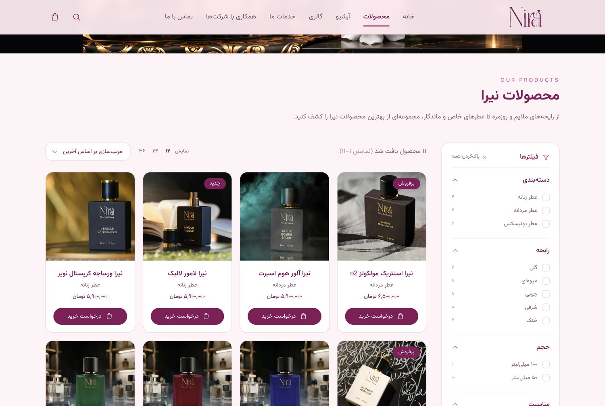
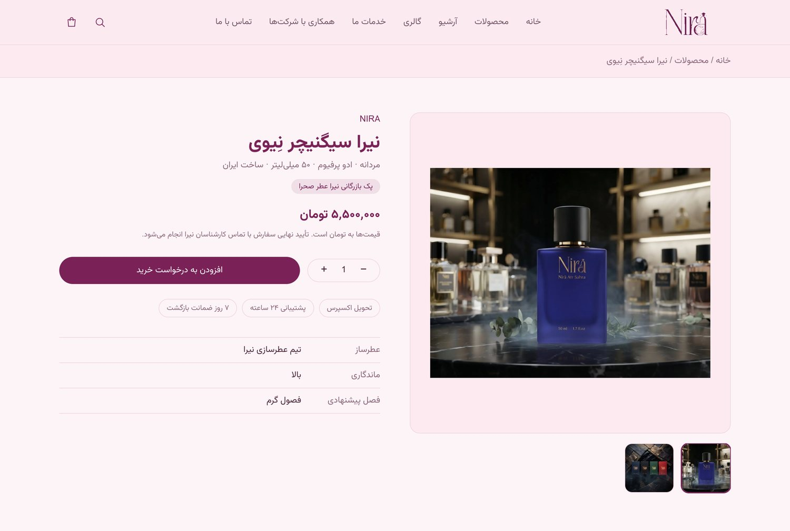
هر جا در پنل کنار یک تصویر دکمهی «انتخاب / آپلود» میبینید (محصولات، رویدادها، پروژهها، صفحات)، روش کار یکی است.
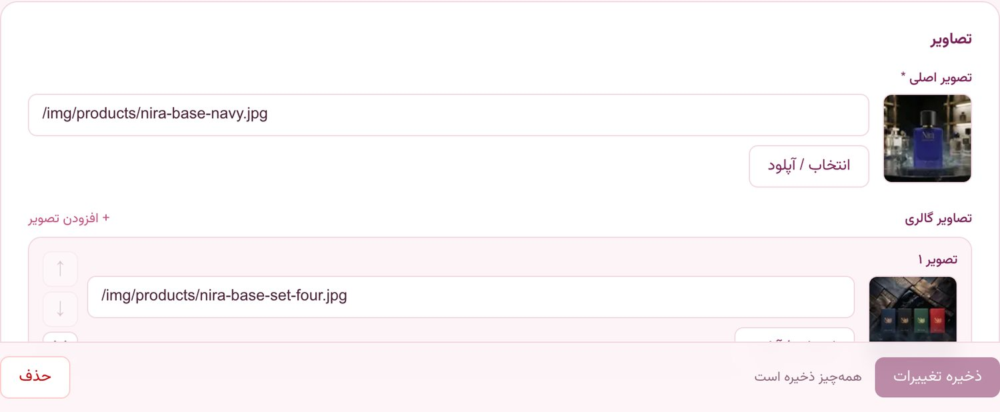
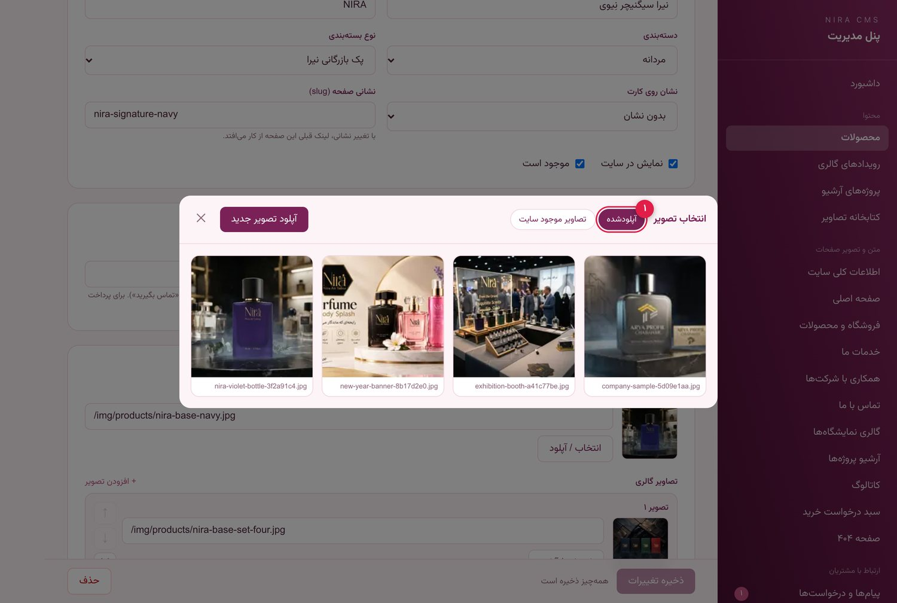
تب «تصاویر موجود سایت» همهی عکسهایی را نشان میدهد که از قبل در سایت هست (بنرها، عکس محصولات، نمایشگاهها و…). با زدن روی هر کدام، همان انتخاب میشود.
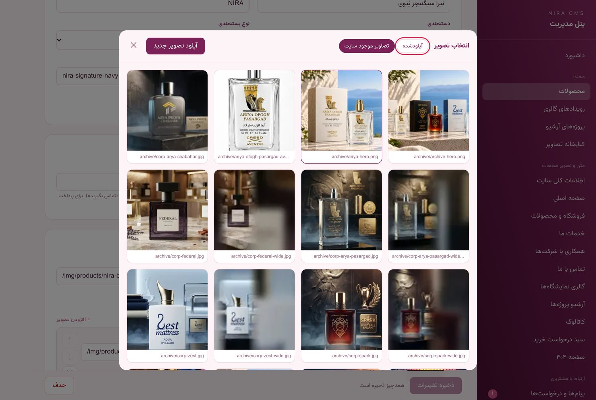
عکسهای گوشی و دوربین معمولاً چند مگابایتاند و آپلودشان روی اینترنت کند طول میکشد. پنل پیش از ارسال، عکسهای بزرگ را خودکار تا بیشینهی ۲۰۰۰ پیکسل کوچک و فشرده میکند (بدون افت محسوس کیفیت)، بنابراین معمولاً لازم نیست خودتان چیزی را کوچک کنید. پیشنمایشها هم نسخهی سبک عکس را نشان میدهند، پس باز شدن پنجره سریع است.
| محل استفاده | اندازهی پیشنهادی |
|---|---|
| بنرهای عریض صفحات (صفحهی اصلی، فروشگاه) | نسبت ۳ به ۲، حدود ۲۰۰۰×۱۳۳۰ پیکسل |
| تصویر اصلی محصول | مربع یا افقی با بطری در مرکز، حداقل ۱۲۰۰ پیکسل |
| تصویر بالای صفحهی رویداد یا پروژه | عریض (مثلاً ۲۴۰۰×۹۲۰)؛ عکس عمودی بریده میشود |
| تصاویر گالری | هر نسبتی؛ ترجیحاً حداقل ۱۲۰۰ پیکسل |
نمایشگاهها و مراسمی که نیرا در آنها حضور داشته، در صفحهی «گالری» سایت نمایش داده میشود. مدیریت آنها از منوی «رویدادهای گالری» انجام میشود.
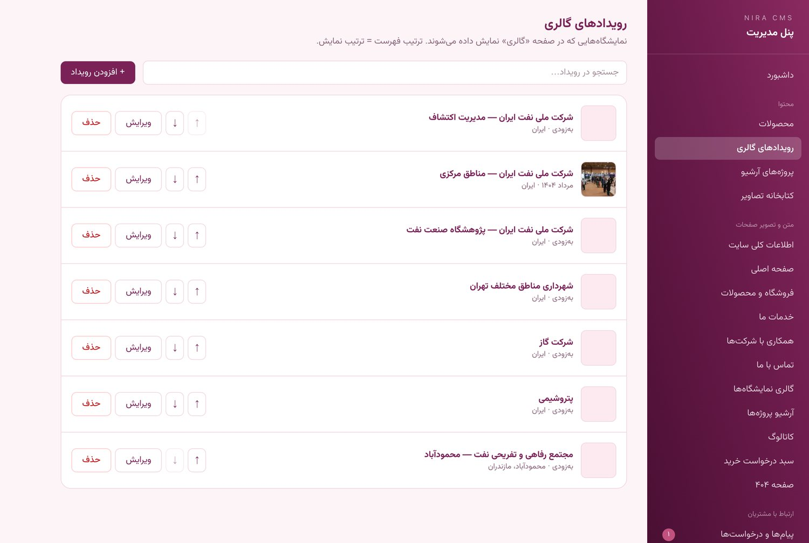
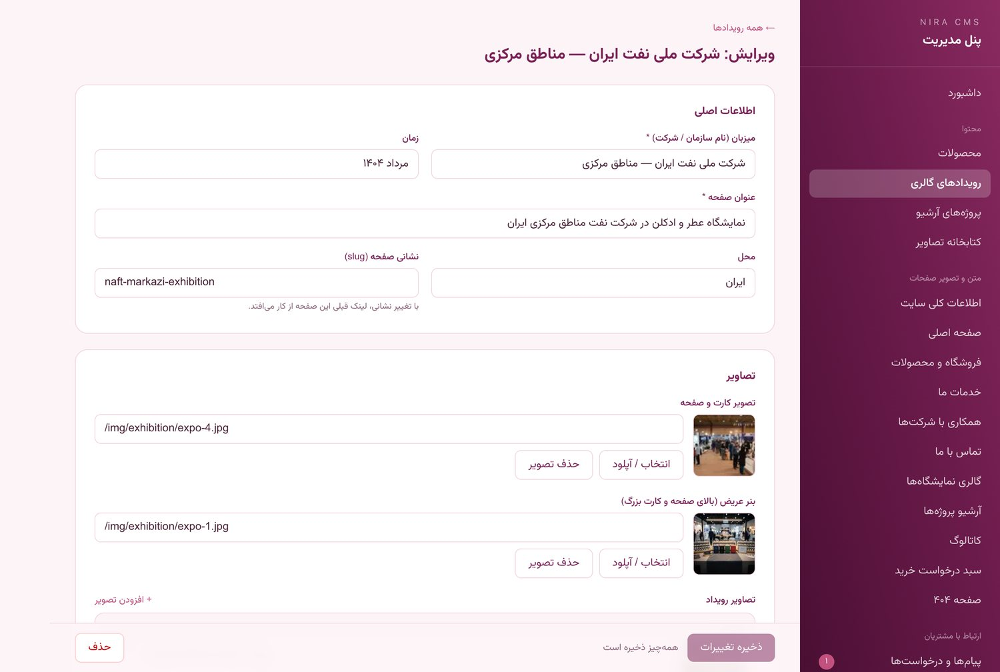
جابهجایی ترتیب و حذف رویداد، مانند محصولات با فلشها و دکمهی «حذف» انجام میشود.
نمونهی عطرهای اختصاصی که برای شرکتها و برندها ساختهاید در صفحهی «آرشیو» و همچنین بخش «نمونهای از همکاریها» در صفحهی «همکاری با شرکتها» دیده میشود. از منوی «پروژههای آرشیو» مدیریتشان کنید.
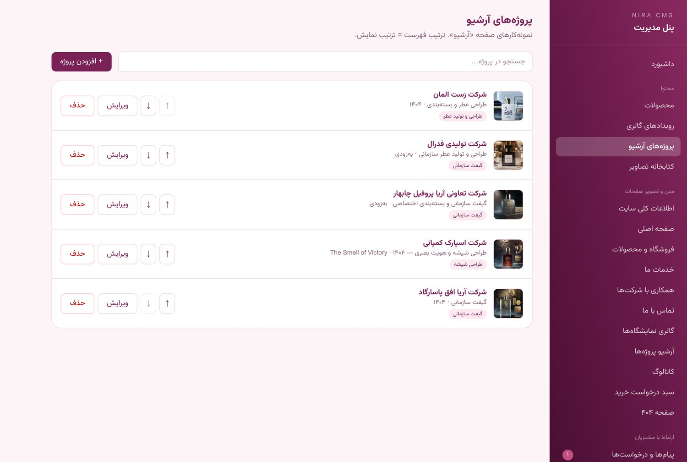
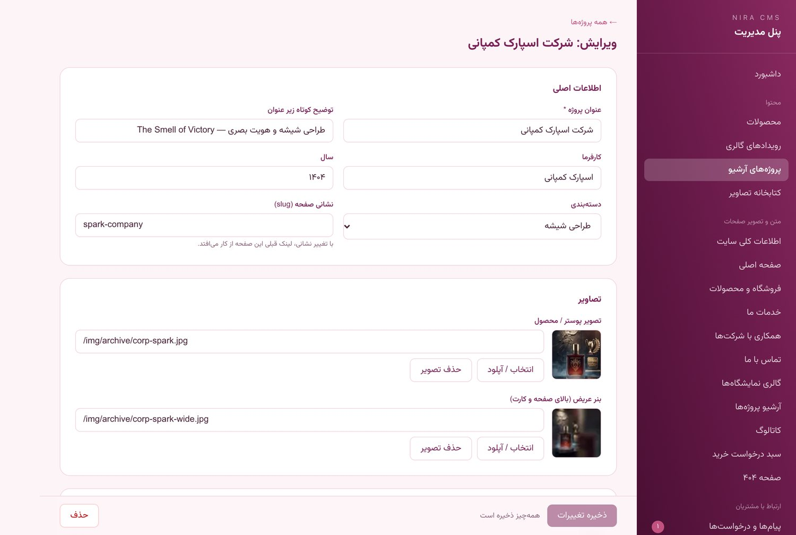
همهی تصاویری که تاکنون آپلود کردهاید، اینجا جمع میشود. میتوانید تصاویر جدید آپلود کنید، نشانی هر تصویر را کپی یا آن را حذف کنید.
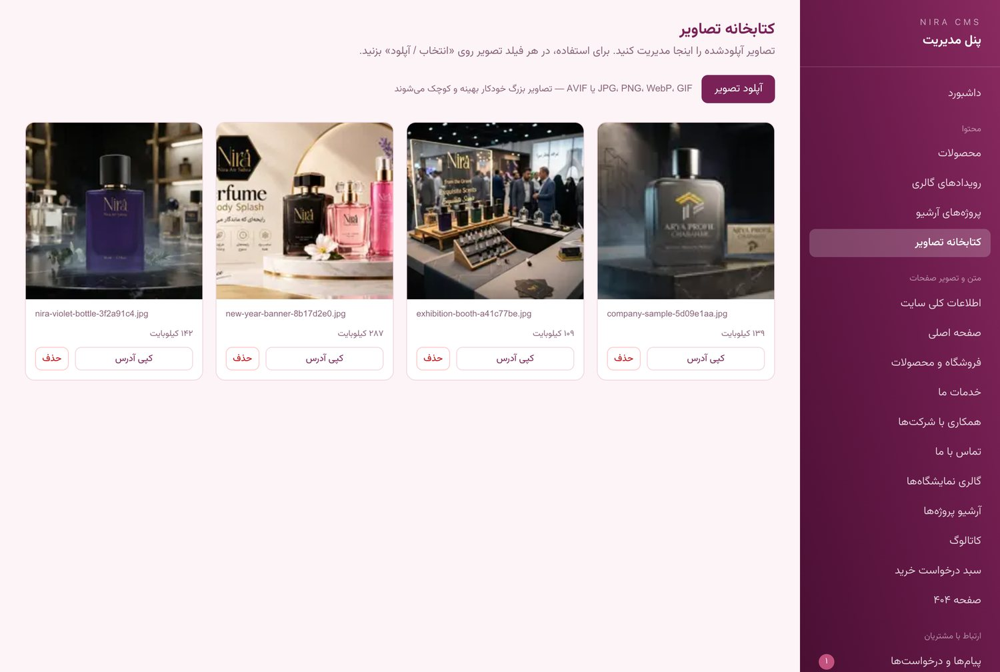
هر پیامی که از فرمهای سایت ارسال شود، اینجا جمع میشود. سه نوع داریم:
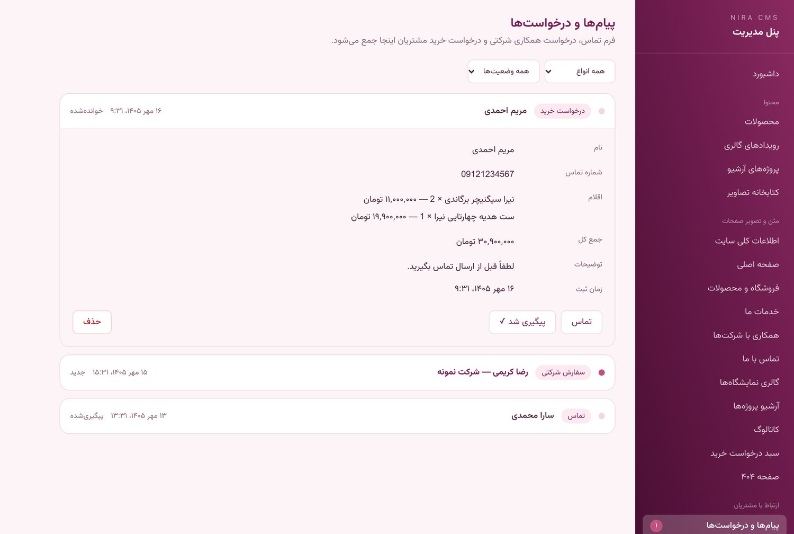
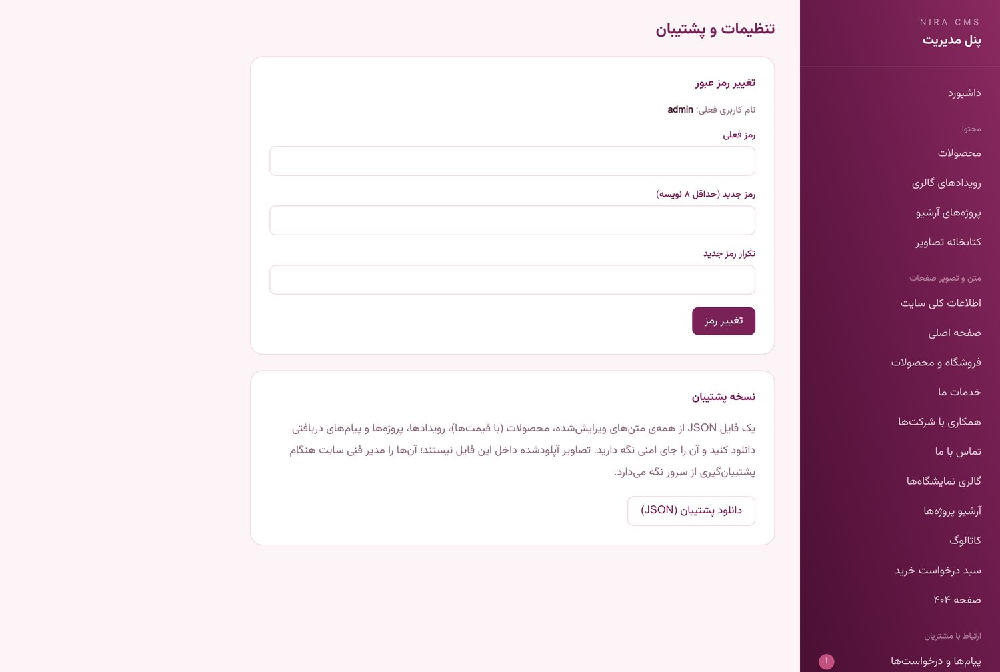
دکمهی «دانلود پشتیبان (JSON)» فایلی از همهی متنهای ویرایششده، محصولات (با قیمتها)، رویدادها، پروژهها و پیامها میدهد. پیشنهاد میشود هر ماه یکبار، و پیش از تغییرات بزرگ، یک نسخه بگیرید و جای امنی نگه دارید. تصاویر آپلودشده داخل این فایل نیستند؛ نگهداری آنها در پشتیبانگیری سرور با مدیر فنی سایت است.
| آنچه در سایت میبینید | کجا ویرایش کنم؟ |
|---|---|
| عنوان و توضیح بالای صفحهی اصلی، بنر اصلی، بخش «درباره» | متن و تصویر صفحات ← صفحه اصلی |
| بنر بزرگ «Perfume & Body Splash» در صفحهی اصلی | صفحه اصلی ← بخش «بنر» ← تصویر بنر |
| بنر بالای صفحهی فروشگاه، عنوان و فیلترها | فروشگاه و محصولات |
| کارت محصولات، قیمت، موجودی، عکس محصول | محصولات |
| بازهی قیمت کلی (وقتی محصولی قیمت ندارد)، متن زیر قیمت | فروشگاه و محصولات ← بخش قیمت |
| نمایشگاهها و تصاویرشان در «گالری» | رویدادهای گالری |
| پروژههای شرکتی در «آرشیو» و «همکاری با شرکتها» | پروژههای آرشیو |
| متنها و فرم صفحهی «همکاری با شرکتها»، عنوان بخش نمونه همکاریها | همکاری با شرکتها |
| شماره تلفن، ایمیل، نشانی، شبکههای اجتماعی، منو و پاورقی | اطلاعات کلی سایت |
| صفحهی «تماس با ما» | تماس با ما |
| متنهای صفحهی سبد خرید و پیامهای موفقیت فرمها | سبد درخواست خرید |
| صفحهای که با نشانی اشتباه باز میشود (۴۰۴) | صفحه ۴۰۴ |
| عنوان و توضیح صفحه در نتایج گوگل | هر صفحه ← بخش «سئو» |
مرورگر ممکن است نسخهی قبلی صفحه را نگه داشته باشد. با Cmd+Shift+R (مک) یا Ctrl+F5 (ویندوز) صفحه را کامل تازه کنید. اگر باز هم تغییر نکرد، پیام «ذخیره شد» را دیدهاید؟ اگر نه، دوباره ذخیره کنید.
فرمت (JPG، PNG، WebP، GIF، AVIF) و حجم (کمتر از ۱۲ مگابایت) را بررسی کنید. پیام خطای زیر نوار پنجره دلیل دقیق را میگوید. اگر اینترنت ضعیف است، یک تصویر را در هر نوبت آپلود کنید.
خیر. حذف دائمی است. اگر میخواهید فقط موقتاً دیده نشود، «نمایش در سایت» را بردارید. برای اطمینان، پیش از تغییرات بزرگ نسخهی پشتیبان بگیرید.
با مدیر فنی سایت تماس بگیرید؛ او میتواند رمز را بازنشانی کند.
پس از چند بار رمز اشتباه، ورود ۱۵ دقیقه قفل میشود. کمی صبر کنید و با رمز درست دوباره امتحان کنید.
اگر محصولی قیمت عددی نداشته باشد (قیمت ۰)، در پیام خرید فقط نام و تعداد میآید و جمع کل نوشته نمیشود. در پنل برای آن محصول قیمت ثبت کنید.
| ورود به پنل | نشانی سایت + /admin ← نام کاربری و رمز |
| عوض کردن متن یا عکس یک صفحه | منوی «متن و تصویر صفحات» ← صفحه ← تغییر ← ذخیره تغییرات |
| محصول جدید | محصولات ← + افزودن محصول ← نام، قیمت، تصویر ← ثبت و بازگشت |
| تغییر قیمت | محصولات ← ویرایش ← «قیمت (تومان)» ← ذخیره تغییرات |
| مخفی کردن محصول | ویرایش ← برداشتن تیک «نمایش در سایت» ← ذخیره |
| عکس جدید | انتخاب / آپلود ← آپلود تصویر جدید ← (انتخاب خودکار) ← ذخیره صفحه |
| نمایشگاه یا پروژه جدید | رویدادهای گالری یا پروژههای آرشیو ← + افزودن |
| دیدن پیام مشتریان | پیامها و درخواستها ← باز کردن ← پیگیری شد ✓ |
| رمز و پشتیبان | تنظیمات و پشتیبان |
| تازه کردن کامل صفحه | Cmd+Shift+R (مک) یا Ctrl+F5 (ویندوز) |